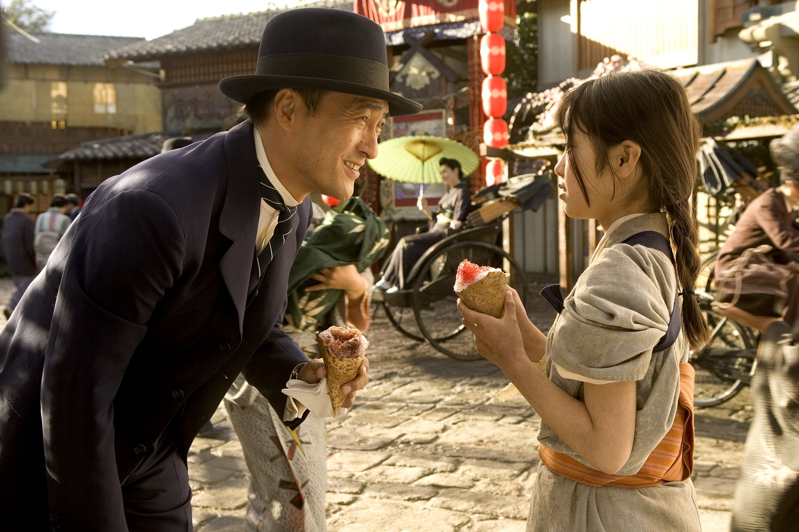
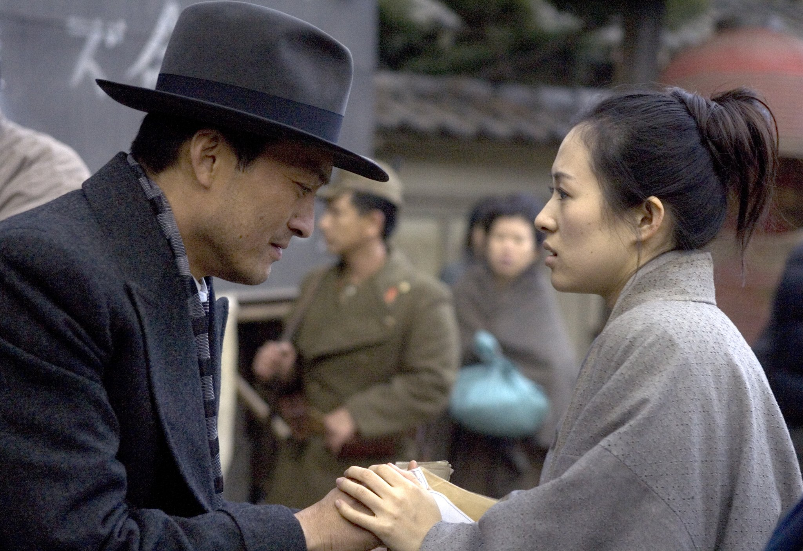
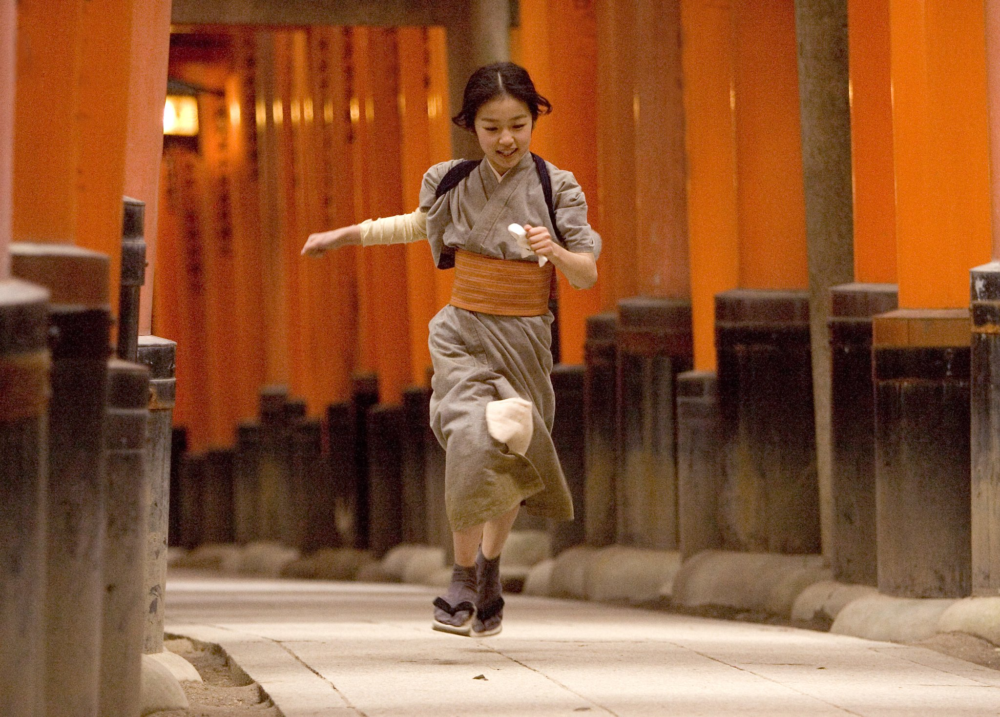
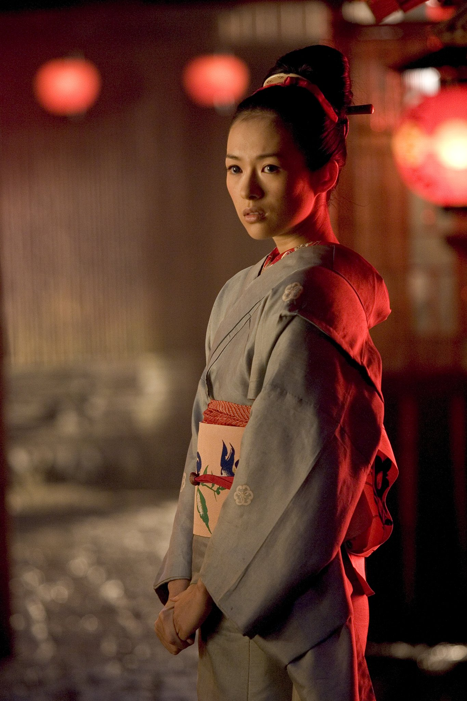
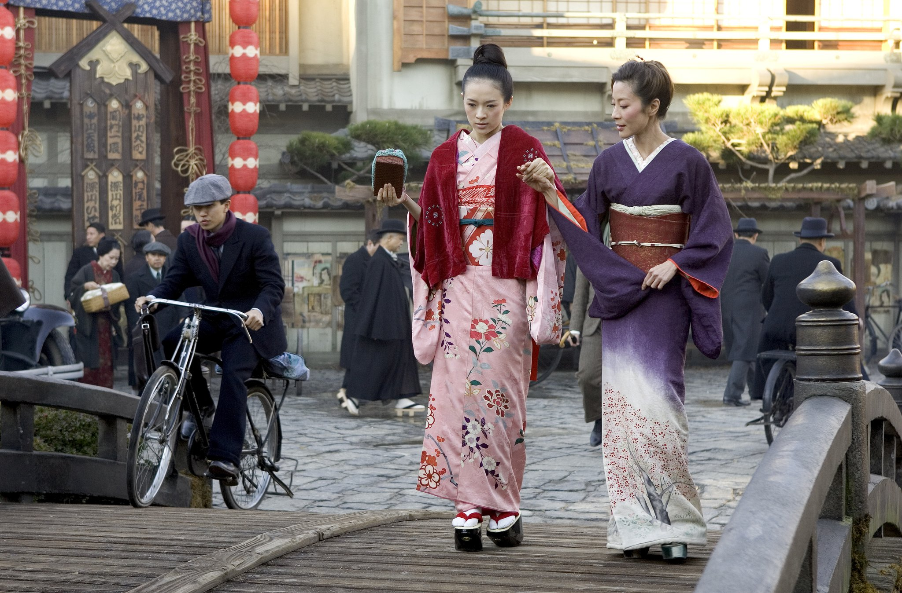
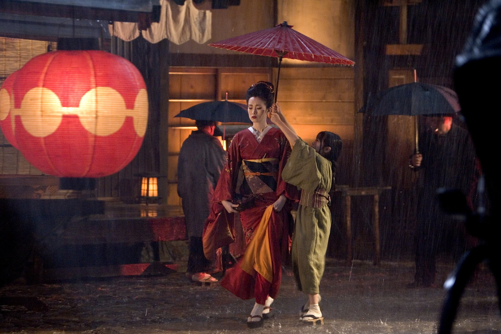
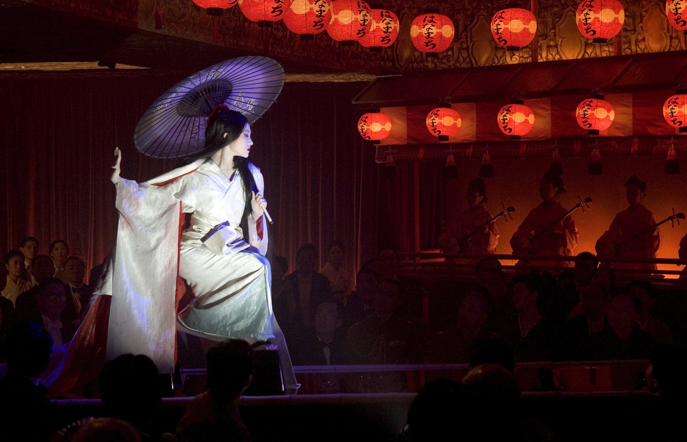
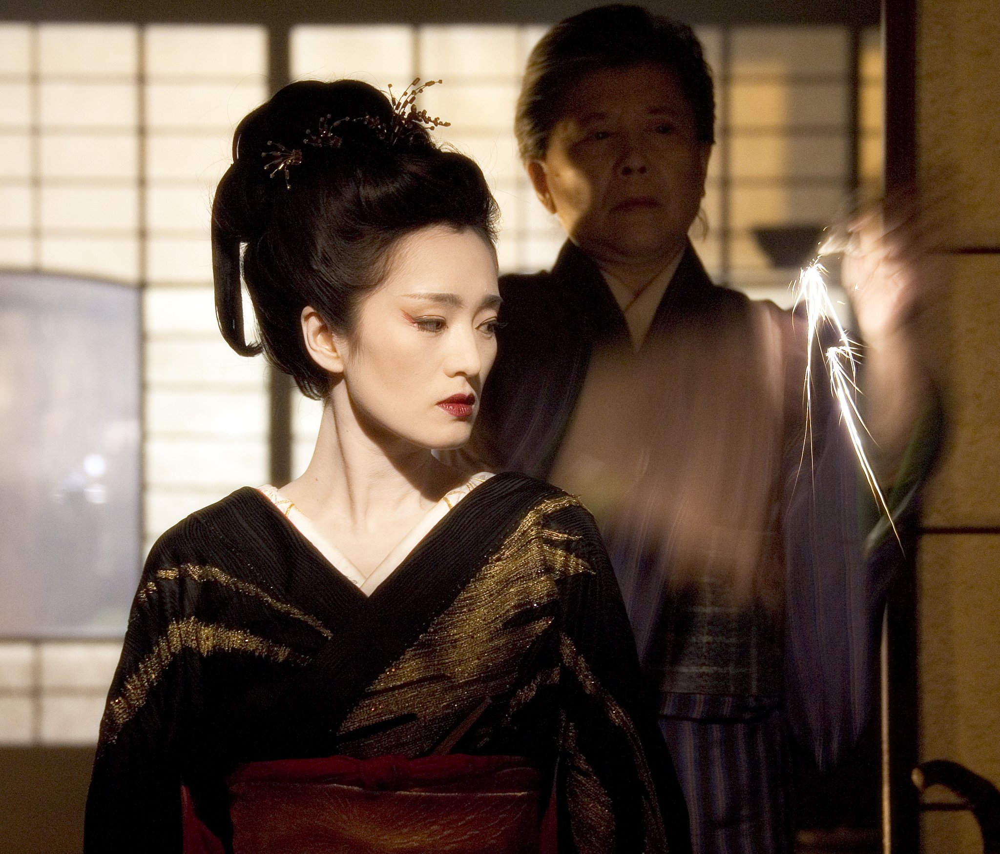
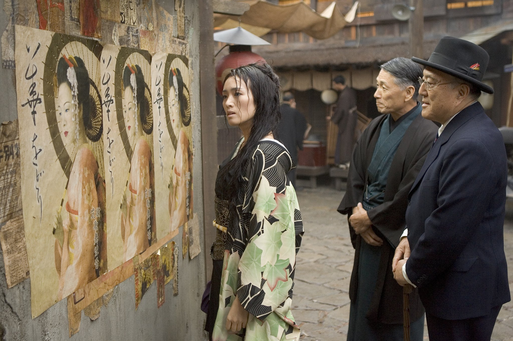

Abstract: The importance of costumes in any movie is not only for the needs of characters and the script. It is also an inseparable part of characters and pushing forward the plot. A good movie would never disregard the importance of costumes. In the movie Memoir of a Geisha, costumes are not only there to illuminate the Japanese atmosphere and cultural background. It is also a representation of the characters’ class status, and a reflection of the progress in the historical background. Thus, it is necessary to study the costume in this movie.
Keywords: costumes; characters; narrative; advance of plot
1. Introduction
Preliminary planning is very important for movie making. Script, art design and storyboard are all essential in preliminary planning, and costume design is another crucial part other than plot design during this process. Costume design is a kind of direct visual design. Visual images are what audience experience when there’s no knowledge of the plot, and costume design and styling is a part of visual images. Costume design can convey pre-knowledge, including story background and character definition. As the story progresses, costumes change as well with the needs for time change, plot settings, and characters’ emotions. That is why costumes are very important for movie making.
2. Influential factors of costumes in Memoir of a Geisha
2.1 Deep Characterization
Memoir of a Geisha won the Academy Award for Best Costume Design in the 78th Academy Awards in 2006. One reason why for its winning is the outstanding costumes themselves, but the other reason is how the costumes are tightly integrated with the plot and characterization. The interactions among the plot, characterization and costumes empathizes with the audience visually and psychologically.
Overall, Memoir of a Geisha is a recollection of the life of the protagonist, Sayuri. Thus, Sayuri becomes the center of the costume design, and costumes play a huge part in the characterization of Sayuri. When Sayuri was young, because of her inferior social background, her costume consists of simple, grey kimono with no excessive decorations. The casting for the character is a little girl with clean and pure eyes and face. Paring a beautiful face like this with the simple costume, it not only shows the social status of the protagonist, but also tells the audience that she will have an extraordinary life.





2.2 Development of the Plot
Time span in this movie is very long, and it was sectioned into Sayuri’s childhood, young adulthood and middle-age period. In the first time period, costumes of simple colors represent Sayuri’s purity. On the other hand, an oiran of the same period is styled drastically different. Her costumes are all bright red or of other bright colors to represent her popularity and glamor. As time passes, Sayuri becomes an oiran herself, but her costumes are not the same as the previously mentioned oiran. Her costumes are also bright but still clear and pure in color, representing her longing for goodness. Her styling is traditional and graceful. At the last time period of the movie, Sayuri regains her simplicity and elegance, but the color in her costumes become darker, making her seem calmer and more intellectual. Thus, we can see that the costumes of different time periods reflect Sayuri’s life experience.




3. The Importance of Costumes in A Movie
Above are a simple analysis on how costumes contribute to characters and plots in Memoir of a Geisha. Even though costume design is only a small part of film making, it can bring different visual and psychological effects on the audience. Good movies are very serious about their costume design research, because it not only includes the development of characters and plots, it also represents the historical background and emotion influences. Fitting costumes on characters in a good project can both intrigue audiences and test the ability and sincerity of a director.
Conclusion:
Costumes are not just props for a movie, they are a testimony of the director’s understanding for the script and sincerity. A good director is able to focus on details while seeing the bigger picture, and the usage of correct costumes are all in the details. Thus, costumes in movies are worth noticing.
Bibliography:
[1] Ting, Z., 2017. Analysis on Group Characterization and Artistic Connotation in Film and Television Works from Memoir of a Geisha. Film Review.
[2] Rongyue, W., 2015. Regarding the Perfect Combination Between Story and Costume in Film[J]. Film Review.